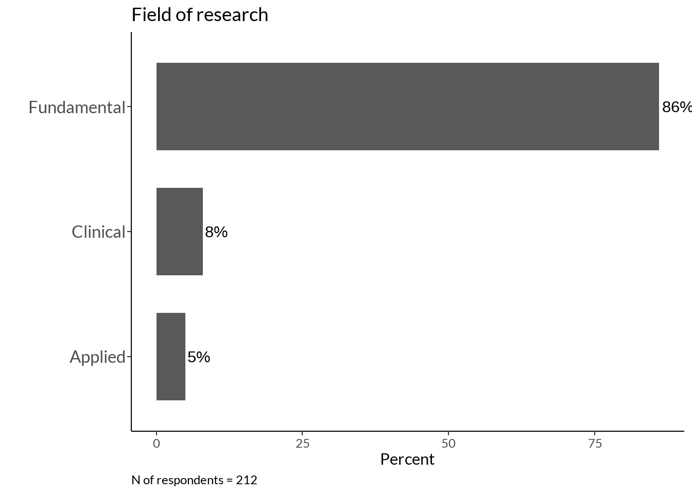
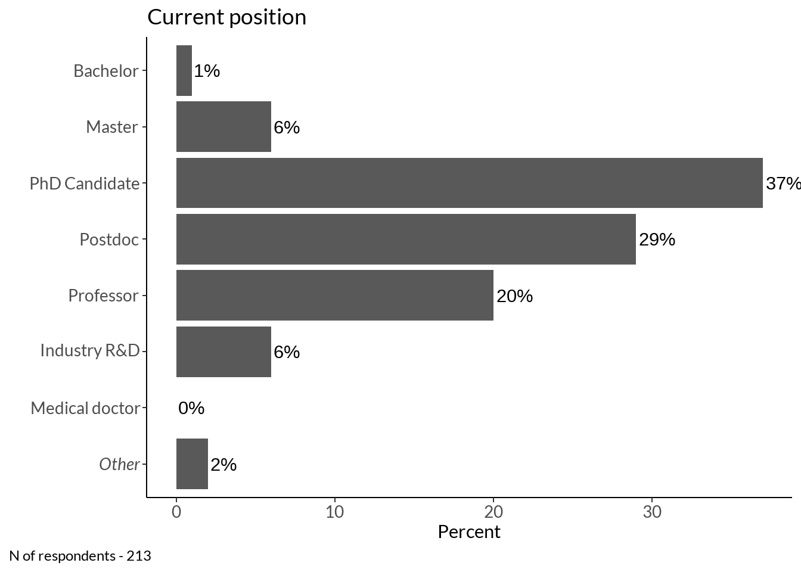
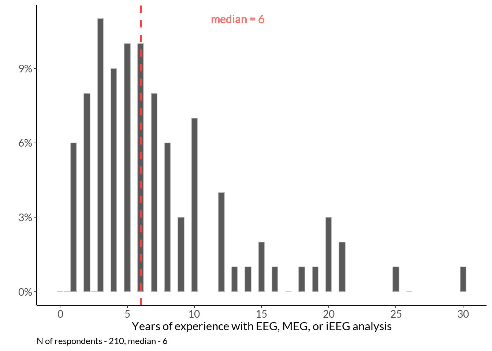
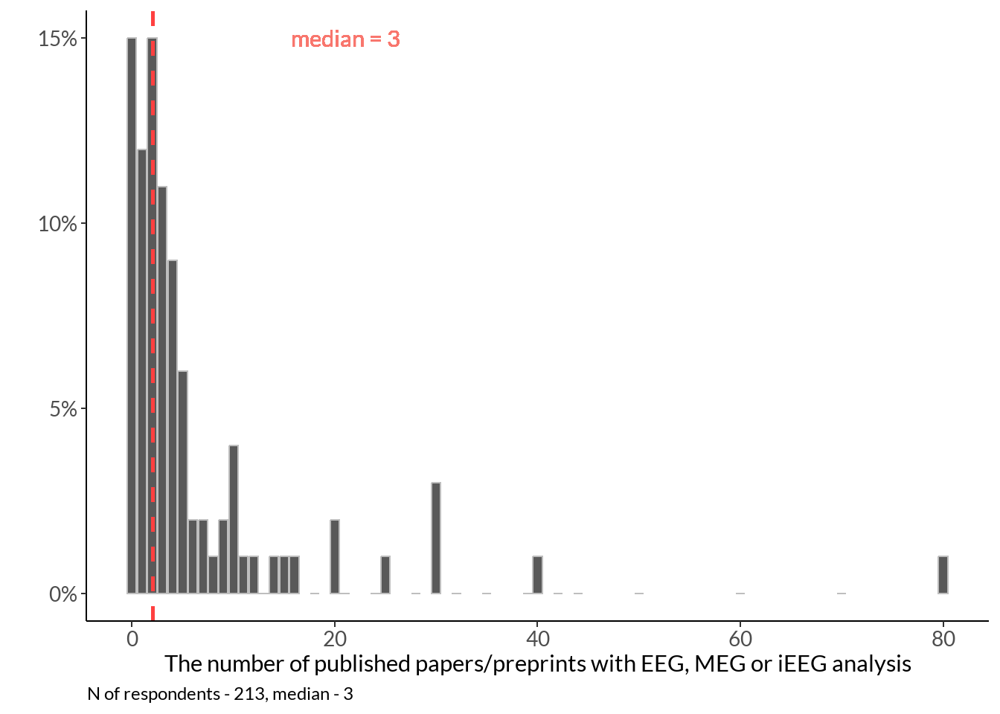

Sample bio
Setup
Show the code
data <- read_excel("data/results-survey.xlsx")
data <- data[1:121] %>%
filter(.[[18]] !='Yes') # not analysed any EEG methodCountry
Show the code
tmp <- data.frame(table(data[8])) %>% dplyr::rename(country_work = !!names(.)[1]) %>%
mutate(country_work = ifelse(Freq >= 3, as.character(country_work), "_Others")) %>% group_by(country_work) %>%
dplyr::summarise(Freq = sum(Freq)) %>%
dplyr::mutate(percent_score = round(Freq / sum(Freq) * 100))
tmp %>%
ggplot(data = ., aes(y = reorder(country_work, percent_score), x= percent_score, fill = country_work)) +
geom_bar(stat = "identity") + labs(x = "Count", y = "Country of work of survey participant") +
geom_text(aes(label = paste0(percent_score, "%")),
position = position_stack(vjust = 0.5), size = 5) + theme_classic() +
labs(caption = sprintf("N of respondents = %d", sum(tmp$Freq))) +
theme(legend.position="none", plot.caption.position = "plot", plot.caption = element_text(hjust=0), axis.text.y = element_text(size = 14))
Field
Show the code
field <- as.data.frame(table(data[9])) %>% arrange(desc(Freq)) %>% head(3)
field$Freq[1] <- field$Freq[1] + 1 # from Others
field$Freq[2] <- field$Freq[2] + 1
field$Freq[3] <- field$Freq[3] + 1
field %>% dplyr::rename(area = !!names(.)[1]) %>%
mutate(percent_score = round(Freq / sum(Freq) * 100)) %>%
ggplot(data = ., aes(x = reorder(area, percent_score), y= percent_score, fill = area)) +
geom_bar(stat="identity") + labs(x="Field of research", y="Count") +
geom_text(aes(label = paste0(percent_score, "%")),
position = position_stack(vjust = 0.5), size = 5) + theme_classic() +
labs(caption = sprintf("N of respondents = %d", sum(field$Freq))) +
theme(legend.position="none", plot.caption = element_text(hjust=0), axis.text.y = element_text(size = 14))
Topic
Show the code
t <- foreach(i = 1:nrow(data)) %do% tokenize_words(as.character(data[i, 11]))
tt <- foreach(i = 1:length(t)) %do% paste(unlist(t[i]), collapse = ' ')
area <- data.frame(matrix(tt)) %>% dplyr::rename(words = !!names(.)[1]) %>%
mutate(words2 = case_when(
grepl("\\bmemory\\b", words) == TRUE ~ "memory",
grepl("\\b(empathy|emot\\w*|affective|social)\\b", words) == TRUE ~ "affective neuroscience",
grepl("\\b(cognitive load|selective attention|attention|cognition|consciousness|meditation|cognitive control|self|executive functions)\\b", words) == TRUE ~ "cognitive control and attention",
grepl("\\b(hearing|audi\\w*)\\b", words) == TRUE ~ "auditory",
grepl("\\b(decision|reward)\\b", words) == TRUE ~ "decision making",
grepl("\\b(ageing|aging)\\b", words) == TRUE ~ "ageing",
grepl('\\bolfac\\w*', words) ~ 'olfaction',
grepl('\\b(communication|language|speech|biling\\w*|english)\\b', words) ~ 'language and speech',
grepl('\\bbci\\b', words) ~ 'bci',
grepl('\\bsleep\\b', words) ~ 'sleep',
grepl('\\b(timing|time|temporal)\\b', words) ~ 'time',
grepl('\\bperception\\b', words) ~ 'perception',
grepl('\\bvis\\w*', words) ~ 'vision',
grepl('\\b(development\\w*|ageing)\\b', words) ~ 'development',
grepl('\\b(spatial|brain body|motor|motion)\\b', words) ~ 'motor control',
grepl('\\b(diagnostics|disorder(s)?|psychiatry|epilepsy|autism|patients|therapy|psychopharmacology|pain|dbs|stimulation)\\b', words) ~ 'mental disorders',
grepl('\\b(signal|potentials|method\\w*|sdf|ieeg|computational)\\b', words) ~ 'methodology',
grepl('\\b(olfaction|vision|auditory)\\b', words) ~ 'development',
))
area %>% group_by(words2) %>% dplyr::summarise(Freq = n()) %>%
data.frame(.) %>% mutate(words2 = as.character(words2)) %>% #arrange(desc(Freq)) %>%
ggplot(data = ., aes(y = reorder(words2, Freq), x= Freq, fill = words2)) +
geom_bar(stat="identity") + labs(x="Topic of research", y="Frequency") +
geom_text(aes(label = Freq),
hjust = -0.2) + theme_classic() +
labs(caption = sprintf("N of respondents = %d", nrow(area))) +
theme(legend.position="none", plot.caption.position = "plot", plot.caption = element_text(hjust=0), axis.text.y = element_text(size = 11))
Method
Show the code
method <- data[14:17]
colnames(method) <- names(method) %>% str_split_i(., "\\? \\[", 2) %>% str_sub(., 1, -2)
data.frame(rowSums(t(data.frame(foreach(i = colnames(method)) %do% ifelse(method[i]=="Yes", 1, 0))))) %>% tibble::rownames_to_column(., "plots") %>%
dplyr::rename(method = !!names(.)[1], sum_scores = !!names(.)[2]) %>% arrange(desc(sum_scores)) %>%
ggplot(., aes(x = reorder(method, sum_scores), y = sum_scores, fill = method)) +
geom_col(stat = "identity") + labs(x = "Method", y = "Value", fill = "Method") +
theme_classic() + theme(legend.position="none") +
geom_text(aes(label = sum_scores), vjust = -0.2) +
labs(caption = sprintf("N of respondents = %d", nrow(method))) +
theme(legend.position="none", plot.caption = element_text(hjust=0), axis.text.y = element_text(size = 14))
Experience
Papers
Show the code
tmp_med <- data[19] %>% dplyr::rename(papers = !!names(.)[1]) %>% filter(papers < 100) %>% summarise(median_paper = median(papers)) %>% as.character()
data[19] %>% dplyr::rename(papers = !!names(.)[1]) %>% filter(papers < 100) %>% ggplot(data = ., aes(papers)) +
geom_histogram() +
labs(x ="The number of published papers/preprints with EEG, MEG or iEEG analysis?", y = "Count") + theme_classic() +
labs(caption = sprintf("N of respondents - %d, median - %s", nrow(method), tmp_med)) +
theme(legend.position="none", plot.caption = element_text(hjust=0), axis.text = element_text(size = 12))
Position
Show the code
#na.omit(data[13]) # recode Others
pos <- as.data.frame(table(na.omit(data[12]))) %>% dplyr::rename(position = !!names(.)[1]) %>%
mutate(position = factor(position, levels = rev(c('Bachelor student', 'Master student', 'Doctoral researcher',
'Postdoctoral researcher', 'Professor', 'Industry senior researcher', 'Medical doctor', 'Other'))))
pos %>%
ggplot(data = ., aes(y = position, x= Freq, fill = position)) +
geom_bar(stat="identity") + labs(x = "Position", y = "Frequency") +
geom_text(aes(label = Freq), hjust = -0.2) +
theme_classic() +
labs(caption = sprintf("N of respondents - %d", sum(pos$Freq))) +
theme(legend.position="none", plot.caption.position = "plot", plot.caption = element_text(hjust=0), axis.text = element_text(size = 10))
Years
Show the code
year <- data %>% dplyr::rename(years = !!names(.)[20]) %>% filter(.[[20]] < 50)
year %>% ggplot(data = ., aes(x = years)) +
geom_histogram(bins = 45) + scale_x_continuous(breaks=seq(0, 30, 5)) +
labs(x ="Years of experience with EEG, MEG, or iEEG analysis", y="Count") +
theme_classic() + theme(legend.position="none", axis.text.x = element_text(size = 12)) +
labs(caption = sprintf("N of respondents - %d, median - %d", nrow(year), median(year$years))) +
theme(legend.position="none", plot.caption = element_text(hjust=0), axis.text = element_text(size = 10))
Self-assessed level
Show the code
sal <- table(data[21]) %>% data.frame() %>% dplyr::rename(level = !!names(.)[1]) %>%
mutate(percent_score = round(Freq / sum(Freq) * 100))
sal %>%
ggplot(data = ., aes(x = level, y= percent_score, fill = level)) +
geom_bar(stat="identity") + xlab("Self-assessed level") +
geom_text(aes(label = paste0(percent_score, "%")),
position = position_stack(vjust = 0.5), size = 6) + theme_classic() +
theme(legend.position="none", axis.text.x = element_text(size = 12)) +
scale_x_discrete(limits = c("Beginner", "Intermediate", "Expert")) +
labs(y="Count") +
labs(caption = sprintf("N of respondents - %d", sum(sal$Freq))) +
theme(legend.position="none", plot.caption = element_text(hjust=0), axis.text = element_text(size = 10))
Code contribution
Show the code
colours = c("#f9a65a", "#599ad3")
table(data[22]) %>% data.frame()%>% dplyr::rename(level = !!names(.)[1]) %>%
mutate(percent_score = round(Freq / sum(Freq) * 100)) %>%
ggplot(data = ., aes(x = reorder(level, Freq), y= Freq, fill = level)) +
geom_bar(stat="identity", width = 0.5) + xlab("Code contribution") +
geom_text(aes(label = paste0(percent_score, "%")), position = position_stack(vjust = 0.5), size = 6) +
theme_classic() +
theme(legend.position="none", axis.text.x = element_text(size = 12)) +
labs(y="Count") +
labs(caption = sprintf("N of respondents - %d", sum(sal$Freq))) +
scale_fill_manual(values=colours) +
theme(legend.position="none", plot.caption = element_text(hjust=0), axis.text = element_text(size = 10))
Time of finishing survey in minutes
Show the code
median(as.numeric(as.matrix(data[121]))) / 60[1] 13.86367